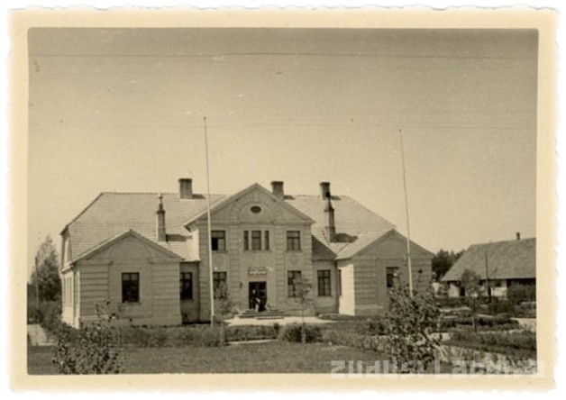
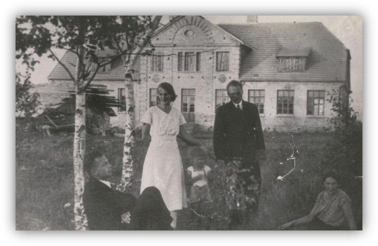
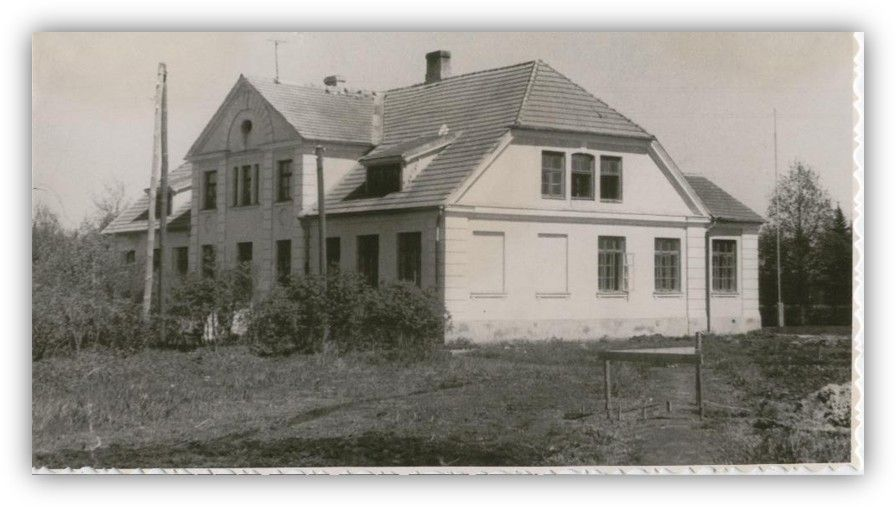
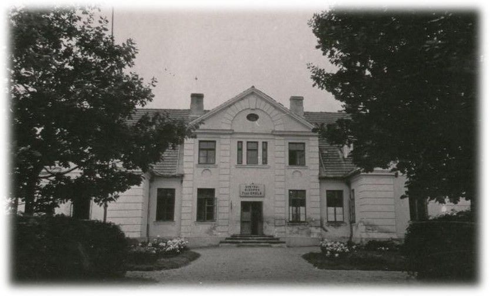
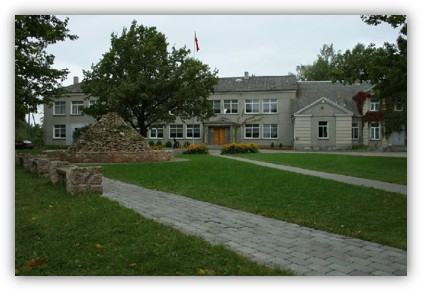
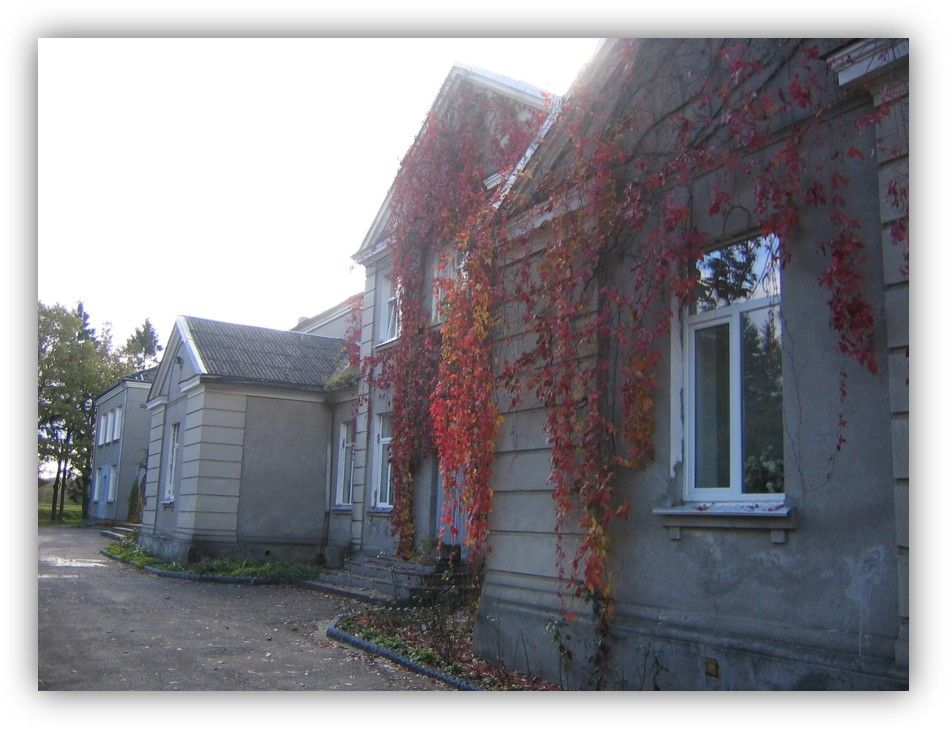
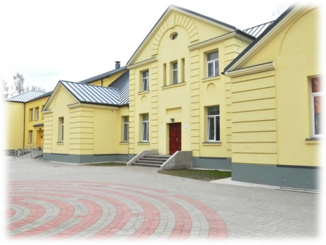
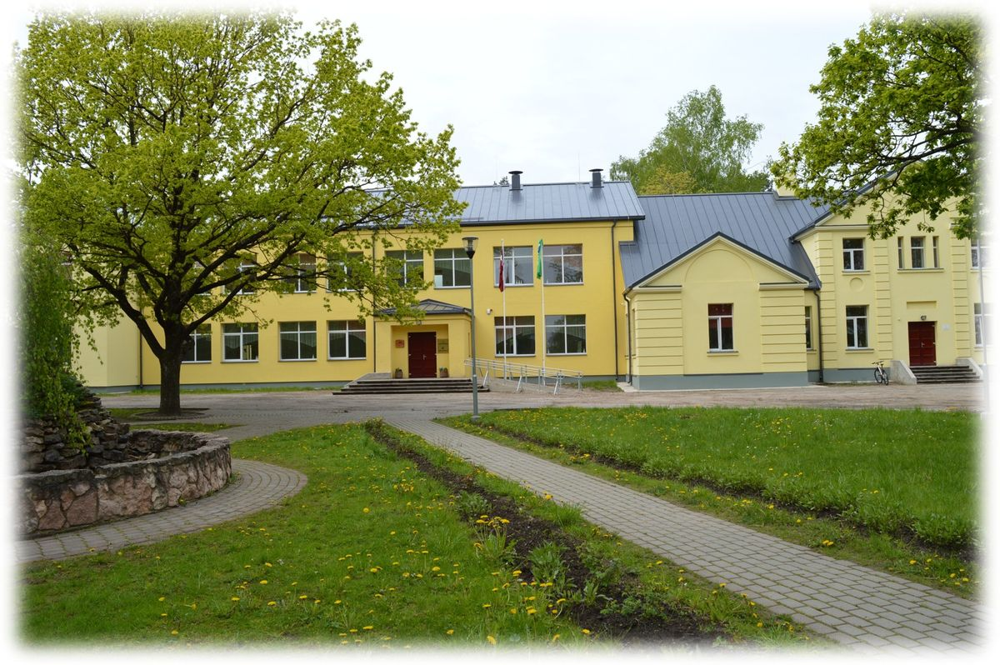

No nelielas istabas ar 22 bērniem līdz modernai skolai ar vairāk nekā 250 skolēniem — deviņdesmit gadu garumā Aizupes pamatskola ir bijusi kopienas sirds Tušķu apkārtnē.
Skolas vēsture aizsākās 1928. gadā, kad Tušķu apkārtējo māju saimnieki sāka vākt ziedojumus skolas celtniecībai. Jelgavas apriņķa valde iniciatīvu atbalstīja, taču solīja segt tikai nelielu daļu no nepieciešamajiem līdzekļiem.
Pēc arhitekta Zēberga projekta 1929. gadā uzsākta ēkas celtniecība. Tā kā būvdarbi vilkās, 1930. gada 1. septembrī skolotājs Fricis Jorniņš sapulcināja 22 bērnus savā dzīvokļa lielākajā istabā — tā sākās mācības jaunajā četrgadīgajā pamatskolā.
1932. gadā skolu nosauca par Svētes-Aizupes I pakāpes pamatskolu. Tajā gadā jau darbojās 4 klases ar 35 skolēniem. Par palīgskolotāju sāka strādāt Vanda Kipere, kura 1934. gadā kļuva par nākamo direktori.

Vanda Kipere vadīja skolu gandrīz divus gadu desmitus. 1947./48. m. g. skolu beidza pirmais 7-gadīgās skolas izlaidums — 13 skolēni. Skolā strādāja 6 skolotāji.

No 1953. gada skolu īsi vadīja skolotāja Ejupe, ar otro pusgadu — V. Fadejevs (direktors līdz 1957. gadam). Skolā darbojās pionieru un oktobrēnu grupas, kolektīvs piedalījās ražas novākšanas talkās. 1955.–1957. g. par skolas mācību pārzini strādāja H. Mirska.
1961. gadā sākās ēkas piebūves celtniecība un vecās ēkas rekonstrukcija. Tajā pašā gadā pirmo reizi mācījās 8. klase ar 17 bērniem — skolēni un skolotāji aktīvi piedalījās būvdarbos.
Ar 1963./64. m. g. 150–160 skolēni jau mācījās jaunajā ēkā. Skolai tika pasniegts skolas karogs. Veiksmīgi darbojās deju kolektīvs un dramatiskais kolektīvs.
No 1971./72. m. g. par mācību daļas vadītāju strādāja L. Šulmane. Skola pārgāja uz kabinetu sistēmu, un tās metodiskais kabinets kļuva par labāko rajonā. Darbojās zīmēšanas, aušanas, literārās jaunrades un citi pulciņi.

Skola bija viena no pirmajām Jelgavas rajonā, kas pārgāja uz 40 minūšu mācību stundu, 10 ballu vērtēšanas sistēmu un ieviesa ieskaišu sistēmu. Skolai bija labi sasniegumi rajona olimpiādēs.
1992. gadā skolā mācījās 249 skolēni un strādāja 25 skolotāji; darbojās 11 pulciņi un fakultatīvi.
1995. gadā, par godu skolas 65 gadu jubilejai, dzejniece Dina Bitēna Sirmā un komponists Atvars Sirmais uzrakstīja Aizupes pamatskolas himnu.

Daudz darīts skolas un tās teritorijas labiekārtošanā: nomainīta zāles grīda, ielikti jauni logi, izveidotas divas datorklases, ierīkotas ģērbtuves ar dušām, ierīkots futbola laukums un rotaļu laukums mazākajiem. Skolas pagalms ieguva jaunu seju: zāliens, bruģēti celiņi, strūklaka "Staburags".
Par tradīciju kļuva 9. klašu Žetona vakars. Akreditācijā slavēja vadītāja un skolotāju darbu un sadarbību ar vecākiem.
2007. gadā par īpašiem panākumiem vides izglītībā Aizupes pamatskola ieguva starptautisko Ekoskolas nosaukumu un Zaļo karogu. Toreizējais vides ministrs Raimonds Vējonis viesojās skolā un pacēla karogu.

Darbu sāka mācību pārzine Dace Hercberga. Skolas teritorijā tika īstenots apgaismojuma projekts. Skolā viesojās Renārs Kaupers.
2010./11. m. g. skolā mācījās 225 skolēni un strādāja 21 pedagogs, kurus atbalstīja 10 tehniskie darbinieki.

Skola turpināja aktīvi iesaistīties starptautiskā sadarbībā, piedaloties dažādos projektos. 2014. gadā notika skolas ēkas plaša renovācija.

Aizupes pamatskola turpina attīstīties metodiskajā darbā un pilnveidot mācību vidi. Tika izstrādāta kārtība skolēnu uzņemšanai 1. klasē.
2024./25. m. g. skolu uzsāka 242 skolēni, bet 2025./26. m. g. — jau 255 skolēni un 47 darbinieki.
